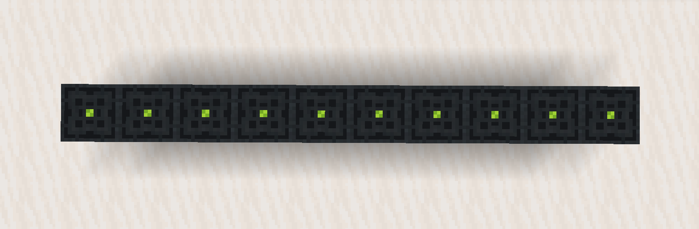
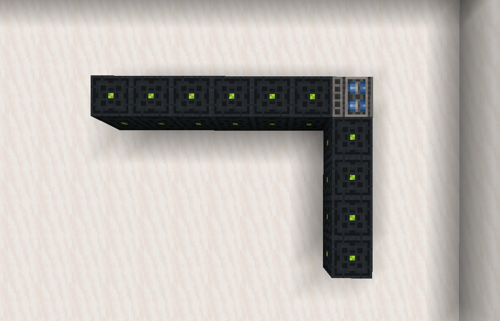
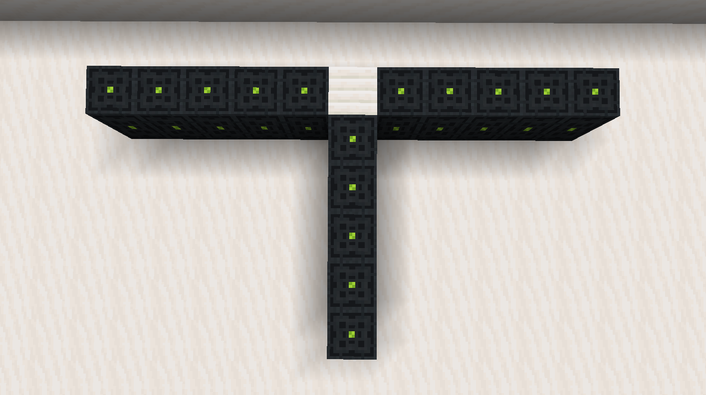
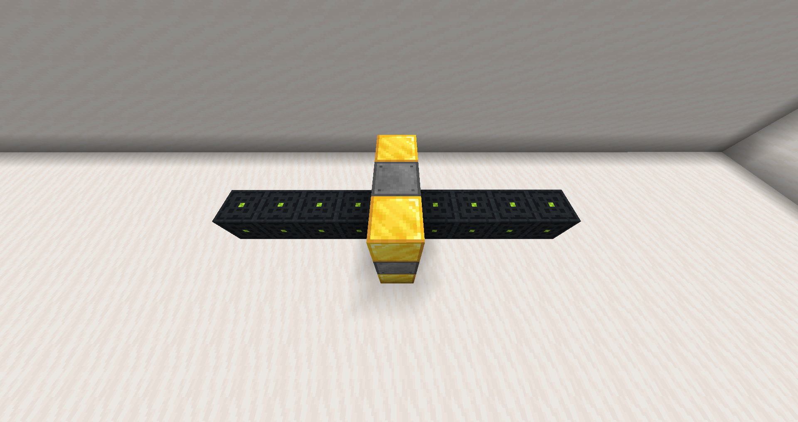
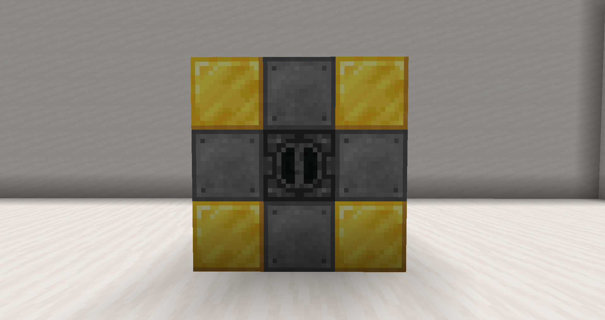

Cables
To connect resonant machines you need resonant cables, these are custom blocks which must be crafted. (see the ingame /recipes command for how to craft them)
Corners
An important thing to note with resonant cables is that they can only transmit in a straight line on their own. To turn corners you will need to place a piston so that the 'head' is facing the new direction you want the cable to go in.
Splitters
If you want to split your cable to transmit power in multiple directions, you will need a splitter, (quartz pillar block) to use a splitter send the power source into the side of the pillar, it will be evenly output through both ends of it.
Power stations
By default resonant cables can only transmit power 100 blocks. And even less if using corners or splitters. While this should be enough for most builds it is possible you will need more, power stations 'boost' the power of resonant cables. giving you another 100 blocks of range to work with.
| Required blocks | |
|---|---|
| Steel blocks (custom) | 4 |
| Gold blocks | 4 |
| Blast furnace | 1 |
Once built, feed your cable 'through' the blast furnace, this will boost the range.